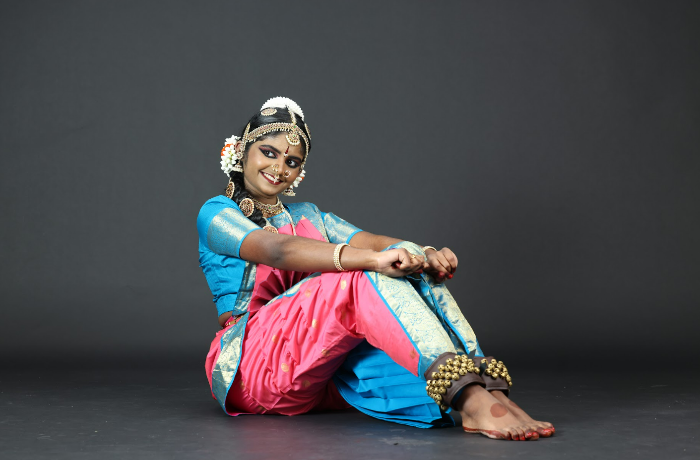

Shibani's Dance Journey

Shibani’s tryst with Bharatanatyam began at the tender age of four, when she first stepped onto the sacred path of dance under the loving guidance of the renowned Bharatanatyam exponent and Malayalam actor, Guru Suchitra Murali. From the very beginning, her guru discerned in her a natural command of laya, tala, crisp adavus, and expressive abhinaya, and gently nurtured these gifts with discipline, devotion, and grace.
As her love for the art form deepened, Shibani continued her sadhana under Guru Manasha and Guru Bhuvana, each Guru adding refinement, depth, and beauty to her journey. For the past nine years, she has blossomed under the steadfast mentorship of Guru Alpna Jacob, whose patient guidance and unwavering support have shaped her into a dedicated and graceful young artiste.
Shibani’s connection to the arts flows beyond dance. A passionate singer, she has been training in music under Guru Nandhini Kambi since the age of five, keeping her firmly rooted in the rich traditions of Indian culture and heritage. Her artistic spirit also embraces Western music, where she has found expression as a viola player, harmoniously bridging classical and contemporary worlds.
A blend of strength and sensitivity, Shibani is also a Third Degree Black Belt, reflecting her discipline, focus, and inner resilience. In her academic life, she has actively participated in debate, earning accolades for her clarity of thought and expression, while contributing to many other clubs and activities in her school community.
This fall, Shibani will embark on a new chapter as she joins Texas Tech University as a Biology major, carrying with her the same curiosity, diligence, and dedication that have marked her artistic journey.
This Arangetram is not merely a performance, but a sacred milestone in Shibani’s voyage as a dancer — a humble offering at the feet of her Gurus, the divine, and all those who have blessed and encouraged her. It stands as a celebration of years of tapasya, love for the art, and the enduring support of her family and well‑wishers.